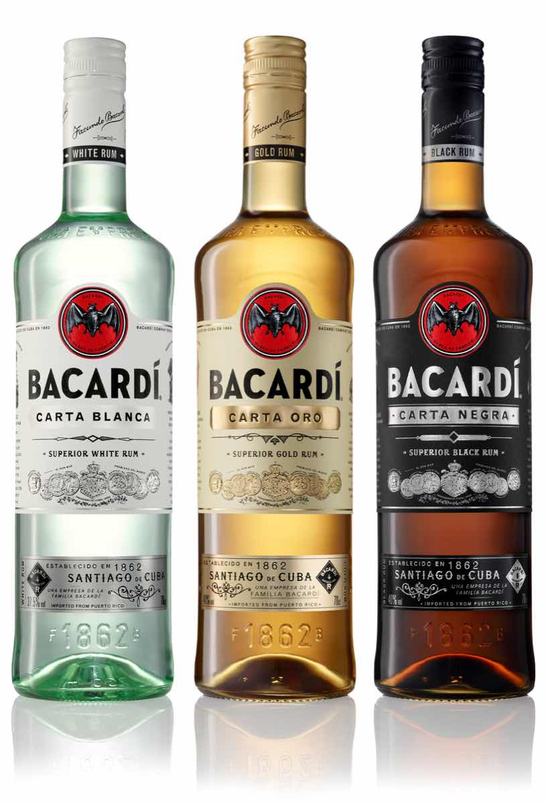

럼은 서인도제도가 원산지로 사탕수수의 생성물을 발효, 증류, 저장시킨 술이다. 럼의 원료는 당밀 혹은 사탕수수이다.
당밀이나 사탕수수를 발효시켜 연속기 증슈기 혹은 단식 증류기로 증류하게 되는데, 헤비 럼의 경우 10년 이상 숙성시키기도 한다.
헤비 럼 : 헤비 럼은 가장 진한 색을 띄고 있어 다크 럼 이라고도 불리며 3년이상 오크통에서 숙성을 시키기 때문에 단맛과 풍미가 가장 깊다. 헤비럼은 단식 증류기를 통해 증류해 향이 깊다.
미디엄 럼 : 미디엄 럼은 헤비 럼 보다 밝은 색을 띄며 금색을 띄고 있어 골드 럼 이라고도 불린다. 헤비 럼과 같은 방법으로 발효한 뒤, 연속식 증류기를 사용해 증류시키는 방법으로 제조되는 것이 일반적이지만, 헤비 럼과 라이트 럼을 혼합하는 방법도 있다.
라이트 럼 : 다른 럼과 달리 오크통에 숙성하지 않고 스테인레스 통에 숙성을 시키며 대부분 단기 숙성을 한다. 오크통에 숙성하지 않아 색이 투명하며 화이트 럼, 실버 럼으로도 불린다.
 -출처: 술고래 그라가스 블로그-